<!DOCTYPE html>
<html class="writer-html5" lang="en" >
<head>
  <meta charset="utf-8" /><meta name="generator" content="Docutils 0.17.1: http://docutils.sourceforge.net/" />

  <meta name="viewport" content="width=device-width, initial-scale=1.0" />
  <title>Quick start: initializing, adding data, runing and saving your PyWGCNA &mdash; PyWGCNA  documentation</title>
      <link rel="stylesheet" href="../_static/pygments.css" type="text/css" />
      <link rel="stylesheet" href="../_static/css/theme.css" type="text/css" />
      <link rel="stylesheet" href="../_static/graphviz.css" type="text/css" />
  <!--[if lt IE 9]>
    <script src="../_static/js/html5shiv.min.js"></script>
  <![endif]-->
  
        <script data-url_root="../" id="documentation_options" src="../_static/documentation_options.js"></script>
        <script src="../_static/jquery.js"></script>
        <script src="../_static/underscore.js"></script>
        <script src="../_static/doctools.js"></script>
    <script src="../_static/js/theme.js"></script>
    <link rel="index" title="Index" href="../genindex.html" />
    <link rel="search" title="Search" href="../search.html" /> 
</head>

<body class="wy-body-for-nav"> 
  <div class="wy-grid-for-nav">
    <nav data-toggle="wy-nav-shift" class="wy-nav-side">
      <div class="wy-side-scroll">
        <div class="wy-side-nav-search" >
            <a href="../index.html" class="icon icon-home"> PyWGCNA
          </a>
<div role="search">
  <form id="rtd-search-form" class="wy-form" action="../search.html" method="get">
    <input type="text" name="q" placeholder="Search docs" />
    <input type="hidden" name="check_keywords" value="yes" />
    <input type="hidden" name="area" value="default" />
  </form>
</div>
        </div><div class="wy-menu wy-menu-vertical" data-spy="affix" role="navigation" aria-label="Navigation menu">
              <ul>
<li class="toctree-l1"><a class="reference internal" href="../README.html">Installation</a></li>
<li class="toctree-l1"><a class="reference internal" href="../README.html#tutorials">Tutorials</a></li>
<li class="toctree-l1"><a class="reference internal" href="../modules.html">API Documentation</a></li>
</ul>

        </div>
      </div>
    </nav>

    <section data-toggle="wy-nav-shift" class="wy-nav-content-wrap"><nav class="wy-nav-top" aria-label="Mobile navigation menu" >
          <i data-toggle="wy-nav-top" class="fa fa-bars"></i>
          <a href="../index.html">PyWGCNA</a>
      </nav>

      <div class="wy-nav-content">
        <div class="rst-content">
          <div role="navigation" aria-label="Page navigation">
  <ul class="wy-breadcrumbs">
      <li><a href="../index.html" class="icon icon-home"></a> &raquo;</li>
      <li>Quick start: initializing, adding data, runing and saving your PyWGCNA</li>
      <li class="wy-breadcrumbs-aside">
            <a href="../_sources/tutorials/Quick_Start.md.txt" rel="nofollow"> View page source</a>
      </li>
  </ul>
  <hr/>
</div>
          <div role="main" class="document" itemscope="itemscope" itemtype="http://schema.org/Article">
           <div itemprop="articleBody">
             
  <section id="quick-start-initializing-adding-data-runing-and-saving-your-pywgcna">
<h1>Quick start: initializing, adding data, runing and saving your PyWGCNA<a class="headerlink" href="#quick-start-initializing-adding-data-runing-and-saving-your-pywgcna" title="Permalink to this headline"></a></h1>
<p>First, make sure to <a class="reference external" href="https://github.com/mortazavilab/PyWGCNA#readme">install PyWGCNA</a>.</p>
<p>I encourage you to look at <span class="xref myst">Data input, cleaning and pre-processing tutorial</span> before running PyWGCNA.</p>
<p>Then, download the data from <a class="reference external" href="https://github.com/mortazavilab/PyWGCNA/raw/fb2cdc6e4fc1d7ec20ee6e9c39930409018c09c0/tutorials/5xFAD_paper.zip">here</a> and uncompressed it.</p>
<p>For this tutorial, we will be analyzing the TPM matrix of 5xFAD mouse from <a class="reference external" href="https://www.model-ad.org/">MODEL-AD</a> portal and <a class="reference external" href="https://www.nature.com/articles/s41597-021-01054-y">this paper</a> in Scientific Data which has 5548 genes and 193 samples in four different time point.</p>
<section id="setupping-up-pywgcna-object">
<h2>Setupping up PyWGCNA object<a class="headerlink" href="#setupping-up-pywgcna-object" title="Permalink to this headline"></a></h2>
<p>We use the TPM matrix to create a PyWGCNA object. The object serves as a container that contains expression data (i.e. TPM) and analysis (like clustering, or visualizing results) for a RNA-seq dataset. For a technical discussion of the PyWGCNA object structure, check out our <a class="reference external" href="https://github.com/mortazavilab/PyWGCNA.wiki.git">GitHub Wiki</a>. For example, the raw TPM matrix is stored in <code class="docutils literal notranslate"><span class="pre">GeneExp</span></code> class as a anndata.</p>
<div class="highlight-python notranslate"><div class="highlight"><pre><span></span><span class="kn">import</span> <span class="nn">PyWGCNA</span>
<span class="n">geneExp</span> <span class="o">=</span> <span class="s1">&#39;5xFAD_paper/expressionList_sorted.csv&#39;</span>
<span class="n">pyWGCNA_5xFAD</span> <span class="o">=</span> <span class="n">PyWGCNA</span><span class="o">.</span><span class="n">WGCNA</span><span class="p">(</span><span class="n">name</span><span class="o">=</span><span class="s1">&#39;5xFAD&#39;</span><span class="p">,</span> <span class="n">species</span><span class="o">=</span><span class="s1">&#39;mouse&#39;</span><span class="p">,</span>
                              <span class="n">geneExpPath</span><span class="o">=</span><span class="n">geneExp</span><span class="p">,</span> 
                              <span class="n">save</span><span class="o">=</span><span class="kc">True</span><span class="p">)</span>
<span class="n">pyWGCNA_5xFAD</span><span class="o">.</span><span class="n">geneExpr</span><span class="o">.</span><span class="n">to_df</span><span class="p">()</span><span class="o">.</span><span class="n">head</span><span class="p">(</span><span class="mi">5</span><span class="p">)</span>
</pre></div>
</div>
<div class="highlight-none notranslate"><div class="highlight"><pre><span></span>Saving data to be True, checking requirements ...
</pre></div>
</div>
<div>
<style scoped>
    .dataframe tbody tr th:only-of-type {
        vertical-align: middle;
    }
<div class="highlight-none notranslate"><div class="highlight"><pre><span></span>.dataframe tbody tr th {
    vertical-align: top;
}

.dataframe thead th {
    text-align: right;
}
</pre></div>
</div>
</style>
<table border="1" class="dataframe">
  <thead>
    <tr style="text-align: right;">
      <th></th>
      <th>ENSMUSG00000000003.15</th>
      <th>ENSMUSG00000000028.15</th>
      <th>ENSMUSG00000000031.16</th>
      <th>ENSMUSG00000000037.16</th>
      <th>ENSMUSG00000000049.11</th>
      <th>ENSMUSG00000000056.7</th>
      <th>ENSMUSG00000000058.6</th>
      <th>ENSMUSG00000000078.7</th>
      <th>ENSMUSG00000000085.16</th>
      <th>ENSMUSG00000000088.7</th>
      <th>...</th>
      <th>ENSMUSG00000118383.1</th>
      <th>ENSMUSG00000118384.1</th>
      <th>ENSMUSG00000118385.1</th>
      <th>ENSMUSG00000118386.1</th>
      <th>ENSMUSG00000118387.1</th>
      <th>ENSMUSG00000118388.1</th>
      <th>ENSMUSG00000118389.1</th>
      <th>ENSMUSG00000118390.1</th>
      <th>ENSMUSG00000118391.1</th>
      <th>ENSMUSG00000118392.1</th>
    </tr>
  </thead>
  <tbody>
    <tr>
      <th>X4mo_cortex_F_5xFADHEMI_430</th>
      <td>0.0</td>
      <td>1.90</td>
      <td>0.00</td>
      <td>0.13</td>
      <td>0.43</td>
      <td>22.370001</td>
      <td>24.240000</td>
      <td>19.320000</td>
      <td>33.410000</td>
      <td>620.450012</td>
      <td>...</td>
      <td>0.75</td>
      <td>0.0</td>
      <td>0.00</td>
      <td>0.00</td>
      <td>0.0</td>
      <td>0.0</td>
      <td>0.0</td>
      <td>0.0</td>
      <td>0.04</td>
      <td>0.0</td>
    </tr>
    <tr>
      <th>X4mo_cortex_F_5xFADHEMI_431</th>
      <td>0.0</td>
      <td>1.10</td>
      <td>0.06</td>
      <td>0.07</td>
      <td>0.18</td>
      <td>16.990000</td>
      <td>24.690001</td>
      <td>23.879999</td>
      <td>31.400000</td>
      <td>705.729980</td>
      <td>...</td>
      <td>0.67</td>
      <td>0.0</td>
      <td>0.55</td>
      <td>0.43</td>
      <td>0.0</td>
      <td>0.0</td>
      <td>0.0</td>
      <td>0.0</td>
      <td>0.00</td>
      <td>0.0</td>
    </tr>
    <tr>
      <th>X4mo_cortex_F_5xFADHEMI_433</th>
      <td>0.0</td>
      <td>1.18</td>
      <td>0.07</td>
      <td>0.13</td>
      <td>1.90</td>
      <td>20.370001</td>
      <td>28.059999</td>
      <td>21.330000</td>
      <td>32.139999</td>
      <td>699.500000</td>
      <td>...</td>
      <td>0.91</td>
      <td>0.0</td>
      <td>0.00</td>
      <td>0.19</td>
      <td>0.0</td>
      <td>0.0</td>
      <td>0.0</td>
      <td>0.0</td>
      <td>0.02</td>
      <td>0.0</td>
    </tr>
    <tr>
      <th>X4mo_cortex_F_5xFADHEMI_434</th>
      <td>0.0</td>
      <td>2.18</td>
      <td>0.00</td>
      <td>0.07</td>
      <td>0.31</td>
      <td>17.980000</td>
      <td>21.459999</td>
      <td>15.060000</td>
      <td>27.600000</td>
      <td>639.950012</td>
      <td>...</td>
      <td>0.11</td>
      <td>0.0</td>
      <td>0.00</td>
      <td>0.00</td>
      <td>0.0</td>
      <td>0.0</td>
      <td>0.0</td>
      <td>0.0</td>
      <td>0.00</td>
      <td>0.0</td>
    </tr>
    <tr>
      <th>X4mo_cortex_F_5xFADHEMI_511</th>
      <td>0.0</td>
      <td>1.50</td>
      <td>0.10</td>
      <td>0.14</td>
      <td>0.53</td>
      <td>18.350000</td>
      <td>20.180000</td>
      <td>18.660000</td>
      <td>26.430000</td>
      <td>640.549988</td>
      <td>...</td>
      <td>0.64</td>
      <td>0.0</td>
      <td>1.38</td>
      <td>0.00</td>
      <td>0.0</td>
      <td>0.0</td>
      <td>0.0</td>
      <td>0.0</td>
      <td>0.02</td>
      <td>0.0</td>
    </tr>
  </tbody>
</table>
<p>5 rows × 55448 columns</p>
</div>
</section>
<section id="pre-processing-workflow">
<h2>Pre-processing workflow<a class="headerlink" href="#pre-processing-workflow" title="Permalink to this headline"></a></h2>
<p>PyWGCNA allows you to easily preproces the data including removing genes with too many missing values or really low expressed across samples(in default we suggest to remove genes without any expression more than 1 TPM) and also removing samples with too many missing values or not matched with. keep in your mind you can change criteria of removing outlier genes or sample by changing <code class="docutils literal notranslate"><span class="pre">TPMcutoff</span></code> and <code class="docutils literal notranslate"><span class="pre">cut</span></code></p>
<div class="highlight-python notranslate"><div class="highlight"><pre><span></span><span class="n">pyWGCNA_5xFAD</span><span class="o">.</span><span class="n">preprocess</span><span class="p">()</span>
</pre></div>
</div>
<div class="highlight-none notranslate"><div class="highlight"><pre><span></span>Pre-processing...
	Detecting genes and samples with too many missing values...
	Done pre-processing..
</pre></div>
</div>
<p></p>
</section>
<section id="construction-of-the-gene-network-and-identification-of-modules">
<h2>Construction of the gene network and identification of modules<a class="headerlink" href="#construction-of-the-gene-network-and-identification-of-modules" title="Permalink to this headline"></a></h2>
<p>PyWGCNA compress all the steps of network construction and module detection in one function called <code class="docutils literal notranslate"><span class="pre">findModules</span></code> including:</p>
<ol class="arabic simple">
<li><p>Choosing the soft-thresholding power: analysis of network topology</p></li>
<li><p>Co-expression similarity and adjacency</p></li>
<li><p>Topological Overlap Matrix (TOM)</p></li>
<li><p>Clustering using TOM</p></li>
<li><p>Merging of modules whose expression profiles are very similar</p></li>
</ol>
<div class="highlight-python notranslate"><div class="highlight"><pre><span></span><span class="n">pyWGCNA_5xFAD</span><span class="o">.</span><span class="n">findModules</span><span class="p">()</span>
</pre></div>
</div>
<div class="highlight-none notranslate"><div class="highlight"><pre><span></span>Run WGCNA...
pickSoftThreshold: calculating connectivity for given powers...
will use block size  1876
    Power  SFT.R.sq     slope truncated R.sq      mean(k)    median(k)  \
0       1  0.368857 -0.481613       0.701585  2444.750755  2260.416617   
1       2    0.7253  -0.99165       0.886361   840.665489   673.081242   
2       3  0.791986 -1.194264       0.946969   385.685335   258.451266   
3       4  0.835392   -1.3419       0.968446   207.404152   113.456084   
4       5  0.853842 -1.472183       0.973346   123.232581    54.784481   
5       6  0.870673 -1.553348       0.979584    78.455923    28.471239   
6       7  0.886736 -1.600869       0.986635    52.572016    15.594822   
7       8  0.896672 -1.639343       0.992373     36.65884     9.454046   
8       9  0.903531 -1.677747       0.994643    26.397061      6.02443   
9      10  0.906045 -1.706474       0.995895    19.521431     3.975959   
10     11  0.905582 -1.731076       0.994806    14.767291     2.623921   
11     13  0.914482 -1.751347       0.997466     8.941254     1.205108   
12     15  0.912684 -1.771227       0.994189     5.759987     0.568044   
13     17  0.912188 -1.774908       0.990829     3.905403     0.273242   
14     19  0.907649 -1.774186       0.989457     2.766824     0.135454   

         max(k)  
0   5665.102677  
1   3009.058817  
2   1916.810604  
3   1332.762767  
4     984.03682  
5    752.959995  
6    591.514189  
7    475.817179  
8    389.237529  
9    322.823835  
10   270.867414  
11   196.222412  
12   146.575347  
13   112.189051  
14    87.594343  
Selected power to have scale free network is 9.
calculating adjacency matrix ...
	Done..

calculating TOM similarity matrix ...
	Done..

Going through the merge tree...
..cutHeight not given, setting it to 0.996  ===&gt;  99% of the (truncated) height range in dendro.


Trying to set attribute `.var` of view, copying.


	Done..

Calculating 34 module eigengenes in given set...
	Done..

mergeCloseModules: Merging modules whose distance is less than 0.2
fixDataStructure: data is not a Dictionary: converting it into one.
multiSetMEs: Calculating module MEs.
  Working on set 1 ...
Calculating 34 module eigengenes in given set...
	Done..

multiSetMEs: Calculating module MEs.
  Working on set 1 ...
Calculating 33 module eigengenes in given set...
	Done..

multiSetMEs: Calculating module MEs.
  Working on set 1 ...
Calculating 31 module eigengenes in given set...
	Done..

multiSetMEs: Calculating module MEs.
  Working on set 1 ...
Calculating 30 module eigengenes in given set...
	Done..

  Calculating new MEs...
multiSetMEs: Calculating module MEs.
  Working on set 1 ...
Calculating 30 module eigengenes in given set...
	Done..

Calculating 30 module eigengenes in given set...
	Done..

fixDataStructure: data is not a Dictionary: converting it into one.
orderMEs: order not given, calculating using given set 0
	Done running WGCNA..
</pre></div>
</div>
<p></p>
<p></p>
<p>We also can merge two previous steps by calling <code class="docutils literal notranslate"><span class="pre">runWGCNA()</span></code> function.</p>
</section>
<section id="relating-modules-to-external-information-and-identifying-important-genes">
<h2>Relating modules to external information and identifying important genes<a class="headerlink" href="#relating-modules-to-external-information-and-identifying-important-genes" title="Permalink to this headline"></a></h2>
<p>PyWGCNA gather some important analysis after identifying modules in <code class="docutils literal notranslate"><span class="pre">analyseWGCNA()</span></code> function including:</p>
<ol class="arabic simple">
<li><p>Quantifying module–trait relationship</p></li>
<li><p>Gene relationship to trait and modules</p></li>
</ol>
<p>keep in your mind before start analysing don’t forget to add any information you have about samples or genes.</p>
<p>For showing module relationship heatmap, PyWGCNA needs user to indicate color from <a class="reference external" href="https://matplotlib.org/stable/gallery/color/named_colors.html">Matplotlib colors</a> for metadata by using <code class="docutils literal notranslate"><span class="pre">setMetadataColor()</span></code> function.</p>
<p>You also can select which data Trait in which order you wish to show in module eigen gene heatmap</p>
<div class="highlight-python notranslate"><div class="highlight"><pre><span></span><span class="n">pyWGCNA_5xFAD</span><span class="o">.</span><span class="n">updateMetadata</span><span class="p">(</span><span class="n">path</span><span class="o">=</span><span class="s1">&#39;5xFAD_paper/metaData&#39;</span><span class="p">,</span> 
                             <span class="n">sep</span><span class="o">=</span><span class="s1">&#39;</span><span class="se">\t</span><span class="s1">&#39;</span><span class="p">)</span>
<span class="c1"># add color for metadata</span>
<span class="n">pyWGCNA_5xFAD</span><span class="o">.</span><span class="n">setMetadataColor</span><span class="p">(</span><span class="s1">&#39;Sex&#39;</span><span class="p">,</span> <span class="p">{</span><span class="s1">&#39;Female&#39;</span><span class="p">:</span> <span class="s1">&#39;green&#39;</span><span class="p">,</span>
                                       <span class="s1">&#39;Male&#39;</span><span class="p">:</span> <span class="s1">&#39;yellow&#39;</span><span class="p">})</span>
<span class="n">pyWGCNA_5xFAD</span><span class="o">.</span><span class="n">setMetadataColor</span><span class="p">(</span><span class="s1">&#39;Genotype&#39;</span><span class="p">,</span> <span class="p">{</span><span class="s1">&#39;5xFADWT&#39;</span><span class="p">:</span> <span class="s1">&#39;darkviolet&#39;</span><span class="p">,</span>
                                            <span class="s1">&#39;5xFADHEMI&#39;</span><span class="p">:</span> <span class="s1">&#39;deeppink&#39;</span><span class="p">})</span>
<span class="n">pyWGCNA_5xFAD</span><span class="o">.</span><span class="n">setMetadataColor</span><span class="p">(</span><span class="s1">&#39;Age&#39;</span><span class="p">,</span> <span class="p">{</span><span class="s1">&#39;4mon&#39;</span><span class="p">:</span> <span class="s1">&#39;thistle&#39;</span><span class="p">,</span>
                                       <span class="s1">&#39;8mon&#39;</span><span class="p">:</span> <span class="s1">&#39;plum&#39;</span><span class="p">,</span>
                                       <span class="s1">&#39;12mon&#39;</span><span class="p">:</span> <span class="s1">&#39;violet&#39;</span><span class="p">,</span>
                                       <span class="s1">&#39;18mon&#39;</span><span class="p">:</span> <span class="s1">&#39;purple&#39;</span><span class="p">})</span>
<span class="n">pyWGCNA_5xFAD</span><span class="o">.</span><span class="n">setMetadataColor</span><span class="p">(</span><span class="s1">&#39;Tissue&#39;</span><span class="p">,</span> <span class="p">{</span><span class="s1">&#39;Hippocampus&#39;</span><span class="p">:</span> <span class="s1">&#39;red&#39;</span><span class="p">,</span>
                                          <span class="s1">&#39;Cortex&#39;</span><span class="p">:</span> <span class="s1">&#39;blue&#39;</span><span class="p">})</span>

<span class="n">geneList</span> <span class="o">=</span> <span class="n">PyWGCNA</span><span class="o">.</span><span class="n">getGeneList</span><span class="p">(</span><span class="n">dataset</span><span class="o">=</span><span class="s1">&#39;mmusculus_gene_ensembl&#39;</span><span class="p">,</span>
                               <span class="n">attributes</span><span class="o">=</span><span class="p">[</span><span class="s1">&#39;ensembl_gene_id&#39;</span><span class="p">,</span> 
                                           <span class="s1">&#39;external_gene_name&#39;</span><span class="p">,</span> 
                                           <span class="s1">&#39;gene_biotype&#39;</span><span class="p">])</span>

<span class="n">pyWGCNA_5xFAD</span><span class="o">.</span><span class="n">analyseWGCNA</span><span class="p">(</span><span class="n">geneList</span><span class="o">=</span><span class="n">geneList</span><span class="p">)</span>
</pre></div>
</div>
<div class="highlight-none notranslate"><div class="highlight"><pre><span></span>Analysing WGCNA...
Calculating module trait relationship ...
	Done..

Adding (signed) eigengene-based connectivity (module membership) ...
	Done..

Updating gene information based on given gene list ...
	Done..

plotting module heatmap eigengene...
	Done..

plotting module barplot eigengene...
	Done..

doing Go term analysis for each module...
Go_term directory does not exist!
Creating Go_term directory!


2022-05-03 15:32:54,782 Warning: No enrich terms using library GO_Biological_Process_2021 when cutoff = 0.5
2022-05-03 15:33:16,098 Warning: No enrich terms using library GO_Biological_Process_2021 when cutoff = 0.5


	Done..
</pre></div>
</div>
<p>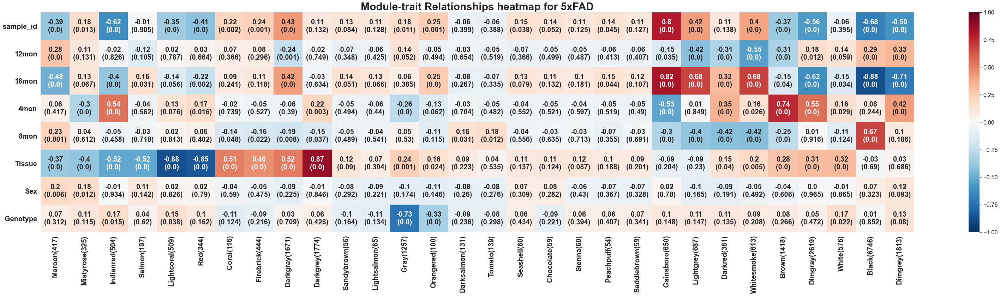</p>
<p></p>
<p>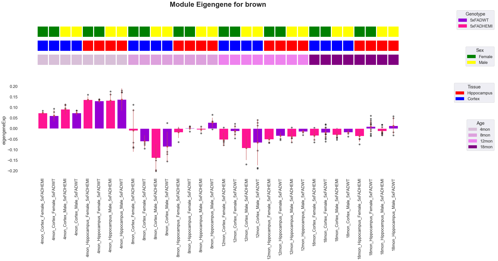</p>
<p></p>
<p></p>
<p></p>
<p></p>
<p></p>
<p></p>
<p>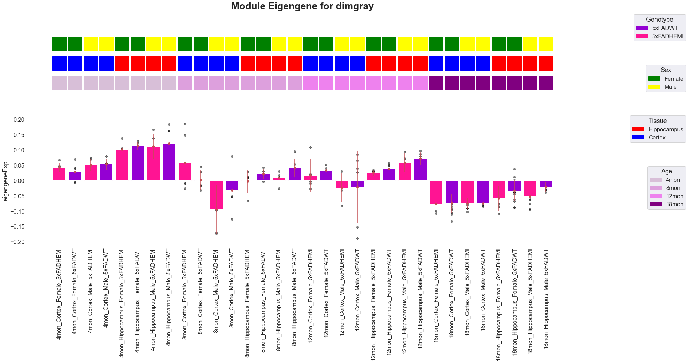</p>
<p></p>
<p>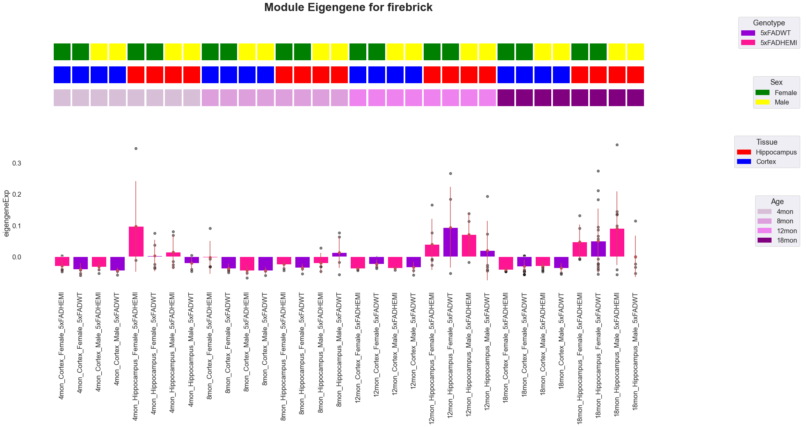</p>
<p></p>
<p>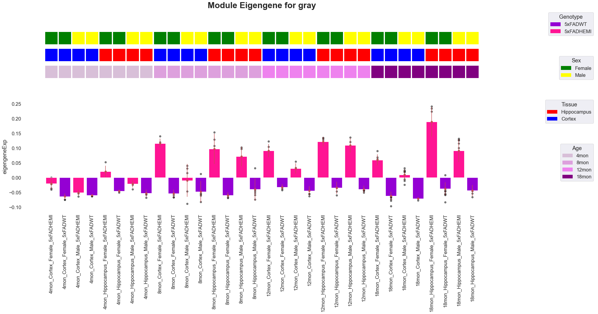</p>
<p></p>
<p></p>
<p>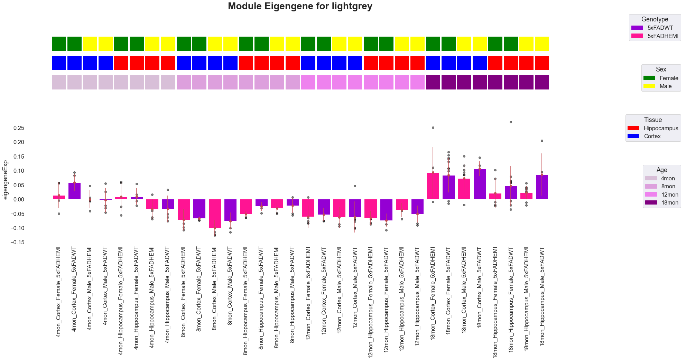</p>
<p></p>
<p></p>
<p>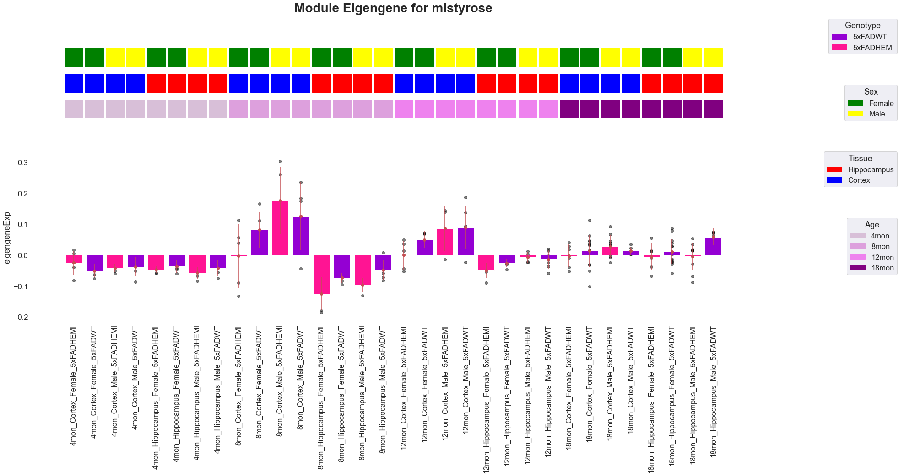</p>
<p>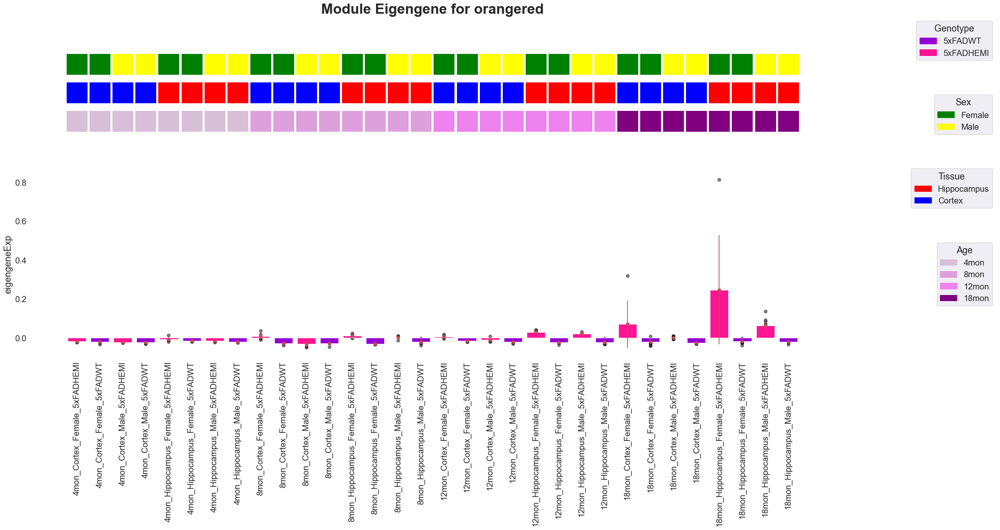</p>
<p></p>
<p>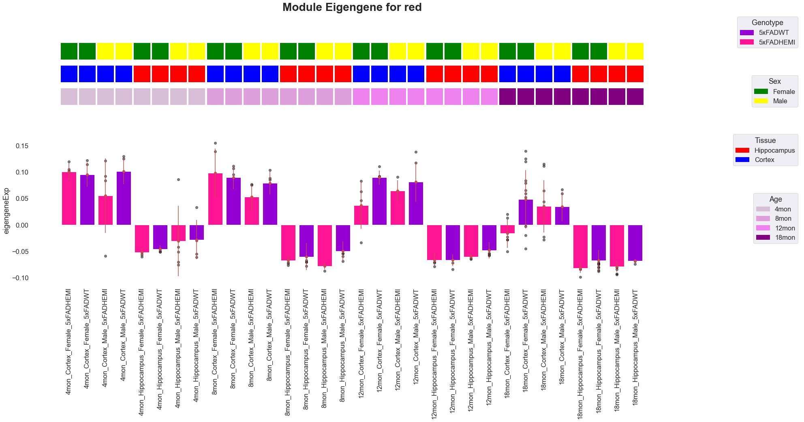</p>
<p></p>
<p>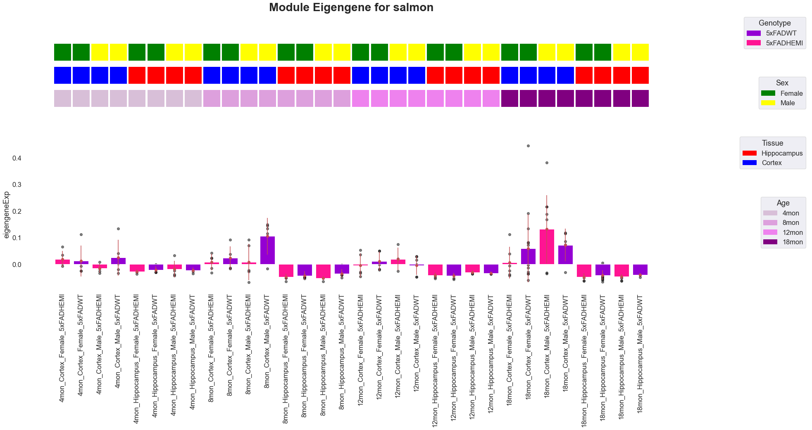</p>
<p>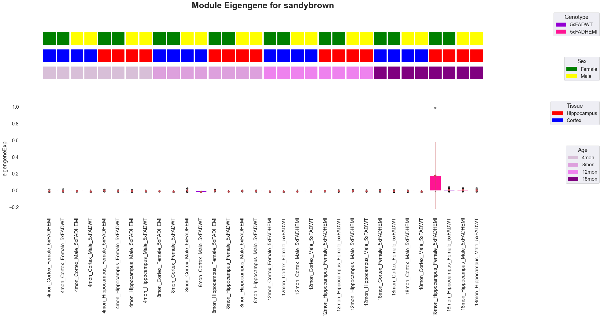</p>
<p></p>
<p>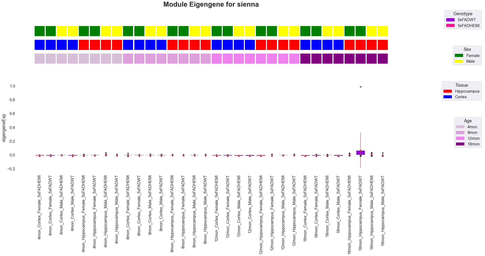</p>
<p>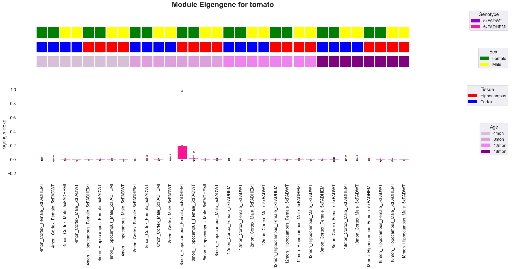</p>
<p></p>
<p></p>
</section>
<section id="saving-and-loading-your-pywgcna">
<h2>Saving and loading your PyWGCNA<a class="headerlink" href="#saving-and-loading-your-pywgcna" title="Permalink to this headline"></a></h2>
<p>you can save or load your PyWGCNA object with <code class="docutils literal notranslate"><span class="pre">saveWGCNA()</span></code> or <code class="docutils literal notranslate"><span class="pre">readWGCNA()</span></code> function.</p>
<div class="highlight-python notranslate"><div class="highlight"><pre><span></span><span class="n">pyWGCNA_5xFAD</span><span class="o">.</span><span class="n">saveWGCNA</span><span class="p">()</span>
</pre></div>
</div>
<div class="highlight-none notranslate"><div class="highlight"><pre><span></span>Saving WGCNA as 5xFAD.p
</pre></div>
</div>
<p>you can also load your PyWGCNA object with <code class="docutils literal notranslate"><span class="pre">readWGCNA()</span></code> function.</p>
<div class="highlight-python notranslate"><div class="highlight"><pre><span></span><span class="kn">import</span> <span class="nn">sys</span>
<span class="n">sys</span><span class="o">.</span><span class="n">path</span><span class="o">.</span><span class="n">insert</span><span class="p">(</span><span class="mi">0</span><span class="p">,</span> <span class="s1">&#39;/Users/nargesrezaie/Documents/MortazaviLab/PyWGCNA&#39;</span><span class="p">)</span>

<span class="kn">import</span> <span class="nn">PyWGCNA</span>
<span class="n">pyWGCNA_5xFAD</span> <span class="o">=</span> <span class="n">PyWGCNA</span><span class="o">.</span><span class="n">readWGCNA</span><span class="p">(</span><span class="s2">&quot;5xFAD.p&quot;</span><span class="p">)</span>
</pre></div>
</div>
<div class="highlight-none notranslate"><div class="highlight"><pre><span></span>Reading 5xFAD WGCNA done!
</pre></div>
</div>
</section>
</section>


           </div>
          </div>
          <footer>

  <hr/>

  <div role="contentinfo">
    <p>&#169; Copyright 2022, Narges Rezaie.</p>
  </div>

  Built with <a href="https://www.sphinx-doc.org/">Sphinx</a> using a
    <a href="https://github.com/readthedocs/sphinx_rtd_theme">theme</a>
    provided by <a href="https://readthedocs.org">Read the Docs</a>.
   

</footer>
        </div>
      </div>
    </section>
  </div>
  <script>
      jQuery(function () {
          SphinxRtdTheme.Navigation.enable(true);
      });
  </script> 

</body>
</html>